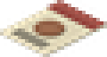
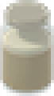
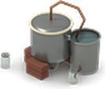
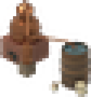

18 to 24 °C is ideal. Cold slows it, near freezing stops it, heat risks souring the batch.
A Stoneware Crock holds 40 L and sours less than a 20 L Fermenting Bucket.
Pitch a yeast packet, a yeast starter, or wild yeast for fruit and honey.
A hydrometer shows the exact progress and time left.



Grain makes moonshine, sugar makes raw rum, wine and cider make raw brandy.
Run spirit again for 90% high-proof.
A still that boils its cooling tub dry can catch fire, and the copper still's thumper draws zombies.
Proof high-proof down to Vodka.
Add a splash of petrol to make fuel ethanol.
Generators take an ethanol blend up to 15%.
Any blend with an Ethanol Carburettor Kit.